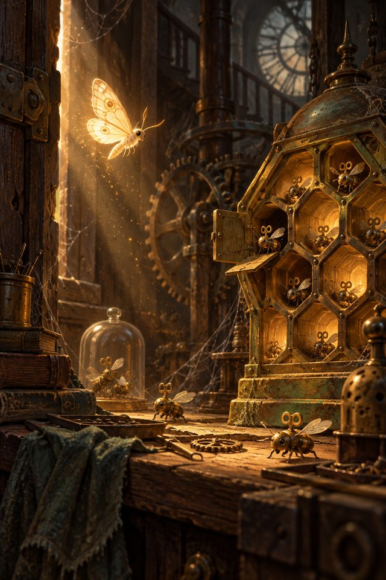

The lantern moth
A moth of living light that settles on the busiest part of your hive and makes it work faster.
On this page
A lantern moth made of living light lives with the hive from the very first minute. It gives you the opening goals and later boosts whatever part of the hive it settles on.
What it does
Every 40 to 150 seconds, at random, the moth flits to another busy part of the hive and settles there. Its light boosts that one thing by 30%. The places it can settle are:
- the Hatchery, while it is assembling wind-ups,
- Oil, Brass, Springs or Schematics gathering, where you have workers on that job,
- the swarm, while it is out fighting,
- the great key, where its light slows the key's unwinding.
The moth never settles on something idle, and it always chooses somewhere new if it has a choice. The Jobs and Climb tabs say where the moth is: The lantern moth has settled on the swarm, +30%.
The moth chooses, not you
You cannot steer the moth, so being away never wastes it. It uses the same randomness whether you watch or not, so time away plays out exactly as time watched.
It grows with the tower
Every time you restart a great clock, the moth glows brighter. Its bonus is 30% plus 10% for each great clock restarted in the current Era. The first great clock is at floor 100, so past floor 100 the moth gives 40%, past floor 200, 50%, and so on.
Helping the moth along
- Moth's Favour research (see Build and research): a tap on the resource where the moth has settled gathers double, and one more time for each further level.
- The Cracked lamp glass curio strengthens the moth's light.
- The Dark Hive Trial takes the moth's light away for a run.
What it never does
The moth cannot be bought, fed or upgraded with money, and being away does not harm it. It stays with the hive through every Rewind and the Grand Winding, and it works the same when the game is closed.
Tip Because the moth boosts whatever it rests on, a hive with a little of everything benefits most: Oilers, Braziers, Coilers and Draughtsmen all give it somewhere to go, and a fighting swarm and a working Hatchery give it more.
Where the moth comes from
In the story it flies ahead of the swarm, rests on the stair rail and, at every great clock, flies into the light and comes back brighter than before.